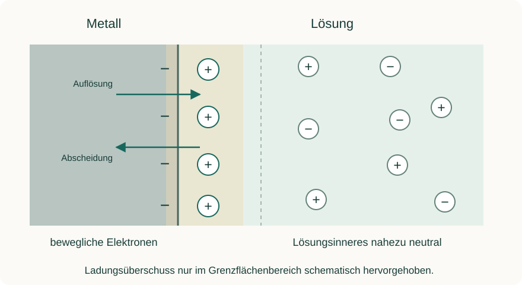

Informieren
Erklärung und Beispiel öffnen
Auch ohne angeschlossenen Verbraucher können zwei Halbzellen eine Spannung zeigen. An der Grenzfläche zwischen Metall und Lösung sind Ladungen auf sehr kleinem Raum räumlich verteilt. Diese Grenzflächenstruktur beschreiben wir vereinfacht als elektrische Doppelschicht.
Im Modell einer geeigneten Metall/Metallionen-Halbzelle können Metallatome unter Elektronenabgabe als Ionen in Lösung gehen; umgekehrt können Ionen Elektronen aufnehmen und in das Metall eintreten. Jede Ladungsverschiebung wirkt auf weitere Übergänge zurück. Im idealisierten dynamischen Gleichgewicht laufen beide gegenläufigen Teilprozesse gleich schnell ab: Die Oberfläche zeigt keinen Netto-Stoffumsatz, obwohl Teilchen weiter reagieren.
M(s) ⇌ Mᶻ⁺(aq) + z e⁻

Die räumliche Ladungsverteilung trägt zur Potentialdifferenz an der Grenzfläche bei. Gemessen wird mit zwei Elektroden eine Potentialdifferenz, nicht durch einen einzigen Kontakt ein absolutes Einzelpotential. Das Lösungsinnere bleibt nahezu neutral; die gesamte Lösung ist keine große positive oder negative Ladungswolke.
Modellgrenzen: Reale Grenzflächen umfassen Lösungsmittelausrichtung, Hydratation, spezifische Adsorption und eine räumlich verteilte Ionenschicht. Das vereinfachte Bild liefert weder einen Zahlenwert des Potentials noch automatisch das Vorzeichen der lokalen Oberflächenladung. „Pluspol“ heißt nur: höheres Potential relativ zum anderen Zellanschluss. Daraus folgt nicht „keine Elektronen im Metall“. Bei Belastung liegen Nettoreaktionen vor; das Gleichgewichtsbild muss entsprechend erweitert werden.
A · Die Grenzfläche als Modell erklären
Eine Skizze beschreibt drei Schritte: (1) Einige Metallatome geben Elektronen ab und gehen als M²⁺ in die Lösung. (2) An der Grenzfläche verändert sich die Ladungsverteilung. (3) Auflösung und Abscheidung laufen gleich schnell ab.
- Formuliere für Schritt 1 und den umgekehrten Vorgang je eine Teilgleichung.
- Erkläre den Übergang von Schritt 2 zu Schritt 3. Weshalb löst sich das Metall im Modell nicht allein durch diesen Anfangsprozess unbegrenzt weiter auf?
- Eine Gruppe misst eine konstante Zellspannung. Unterscheide, was damit beobachtet wurde und welche Teile der drei Schritte Modellannahmen sind.
- Beschreibe, was sich am Netto-Stoffumsatz ändert, wenn die Daniell-Zelle einen äußeren Widerstand versorgt.
Hilfe 1
Denke an die elektrische Rückwirkung der getrennten Ladungen. Dynamisches Gleichgewicht bedeutet gleiche gegenläufige Umsätze, nicht ruhende Teilchen.
Hilfe 2
Bei M → M²⁺ + 2 e⁻ verbleiben Elektronen im Metall. Die veränderte Grenzflächenladung beeinflusst Hin- und Rückprozess. Eine konstante Anzeige zeigt nur eine zeitlich stabile Messgröße, keine direkt beobachteten Einzelreaktionen.
Musterlösung
Auflösung: M → M²⁺ + 2 e⁻. Abscheidung: M²⁺ + 2 e⁻ → M. Die zunächst entstehende räumliche Ladungstrennung verändert die Bedingungen weiterer Übergänge: Sie wirkt im gezeigten Fall weiterer positiver Ladungsabgabe entgegen und begünstigt den Gegenprozess. Im idealisierten Gleichgewicht sind die Geschwindigkeiten beider Teilprozesse gleich; der Netto-Stoffumsatz beträgt null.
Beobachtet wurde eine konstante Spannung zwischen zwei Messkontakten innerhalb von Messdauer und Auflösung. Einzelne Ionenaustritte, Ladungsverteilungen und gleiche mikroskopische Umsätze wurden damit nicht direkt beobachtet. Sie gehören zur modellhaften Erklärung. Eine konstante Spannung allein beweist zudem nicht, dass jede reale Grenzfläche bereits vollständig im Gleichgewicht ist.
Bei äußerer Belastung wird an der Zinkanode netto Zn oxidiert, an der Kupferkathode netto Cu²⁺ reduziert. Die gegenläufigen Teilumsätze müssen dann nicht mehr gleich sein; Ladungs- und Stofftransport ermöglichen die anhaltende Entladung.
B · Drei Modellbehauptungen beurteilen
- „Im Gleichgewicht hören Metallatome und Ionen auf, ineinander überzugehen.“
- „Weil die Kupferelektrode der Pluspol der Daniell-Zelle ist, muss ihre gesamte Metalloberfläche positiv geladen sein und die ganze Kupferlösung negativ.“
- „Wenn man beide Ladungsschichten mit je zehn Symbolen zeichnet, kann man daraus die gemessene Zellspannung von ungefähr 1,1 V berechnen.“
Hilfe 1
Prüfe jeweils, ob eine Eigenschaft des vereinfachten Bilds mit einer realen messbaren Größe verwechselt wird.
Hilfe 2
Bei 1 ist das Wort „dynamisch“ entscheidend. Bei 2 werden relativer Potentialvergleich und lokale Oberflächenladung gleichgesetzt. Bei 3 fehlen quantitative Angaben und ein Modell zur Berechnung.
Musterlösung
1 falsch: Im dynamischen Gleichgewicht laufen Hin- und Rückprozess weiter, aber mit gleichem Umsatz pro Zeit. Deshalb ist kein Netto-Stoffumsatz erkennbar.
2 falsch: Die Polung beschreibt das relative Potential der zwei Anschlüsse. Sie bestimmt nicht unmittelbar das lokale Ladungsvorzeichen an einer bestimmten Grenzfläche. Die Ladungsverteilung hängt auch von Elektrodenmaterial, Potential relativ zum Zustand ohne Oberflächenüberschussladung und Grenzflächenchemie ab. Außerdem bleibt das Lösungsinnere nahezu elektroneutral; die Zeichnung einer vollständig negativ geladenen Lösung wäre unzutreffend.
3 falsch: Symbolzahlen sind keine Messwerte. Es fehlen unter anderem reale Flächen, Abstände, Stoffeigenschaften und eine quantitative Beschreibung beider Grenzflächen. Das Bild erklärt begrenzte Ladungstrennung und ihre Rückwirkung qualitativ. Ein Spannungswert folgt daraus nicht durch Abzählen von Zeichen.
Zurück zur Checkliste
Kannst du den Punkt jetzt an einer eigenen Erklärung oder einer neuen Aufgabe nachweisen? Ordne dich ein: sicher (selbstständig), teils (mit Hilfe) oder offen (noch Lernbedarf). Notiere bei Bedarf, was du noch klären möchtest.
Fachliche Quellen und Modellgrenzen
Eigene Lerntexte, Aufgaben, modellhafte Daten und Abbildungen. Fachliche Grundlagen:
- OpenStax, Chemistry 2e: Galvanic Cells
- IUPAC Gold Book: equilibrium electrode potential
- IUPAC Gold Book: potential at the point of zero charge
- IUPAC Gold Book: double-layer current
Die Beispiele verwenden vereinfachte Metall/Metallionen-Systeme. Reale Beobachtungen hängen auch von Konzentration, Oberfläche, Zeit und Nebenreaktionen ab.